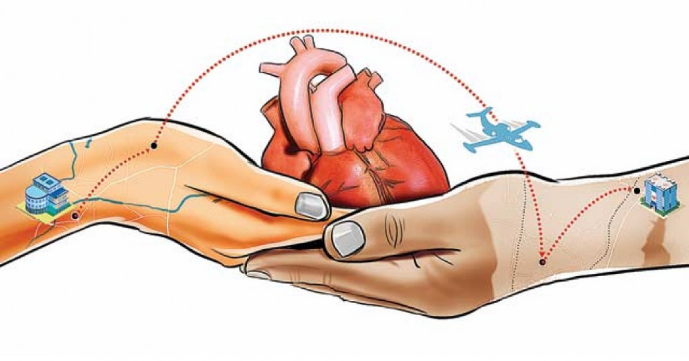

Opinión | |
| En mi punto de vista los transplantes de órganos son más importantes de lo que uno imagina, en este caso el transplante de vasos sanguineos pueden ayudar a otras personas que tienen dificultades con este haciendo que tengan un periodo más largo de vida, esto tambien permite a que la lista de espera de pacientes sea más corta y asi podamos salvar las vidas de aquellos que lo necesitan. |  |